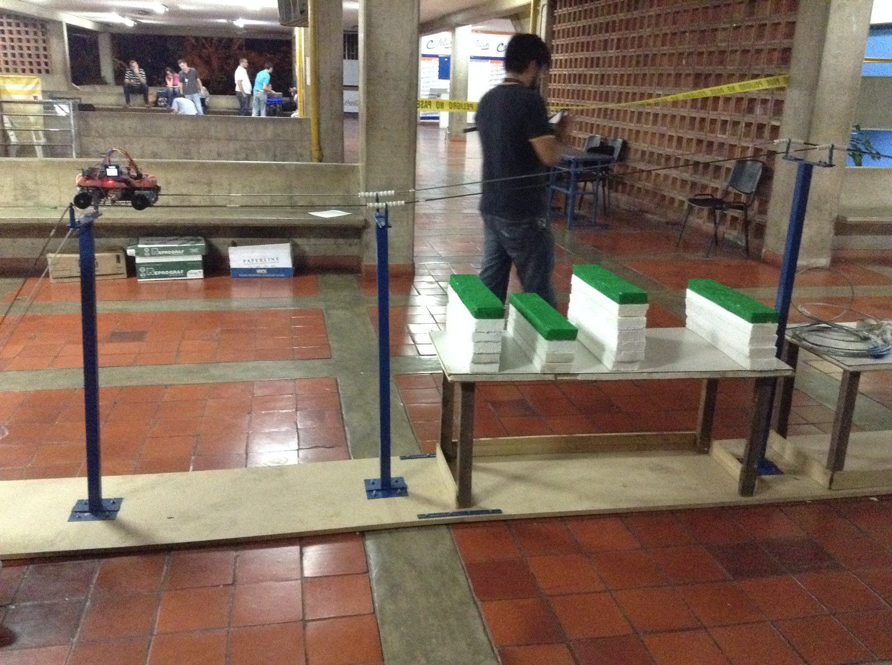
E-wanna — a Power-Line Inspection Robot
Real high-tension transmission lines run for kilometers through terrain that's slow and dangerous for a person to walk, so keeping them running means either sending a lineman to climb the towers or renting a helicopter. E-wanna is a robot built by team ZERO (Zero Enterprise of Robotics Operations, Universidad Simón Bolívar) for the DESAFÍO category of UNETBots 2015, a national robotics competition whose challenge was exactly that: build an autonomous robot that rides the cable itself, finds hot spots and encroaching vegetation, reports how far each one is from the start, and physically cuts the vegetation off the line — all while two electric fans blow simulated wind at it.
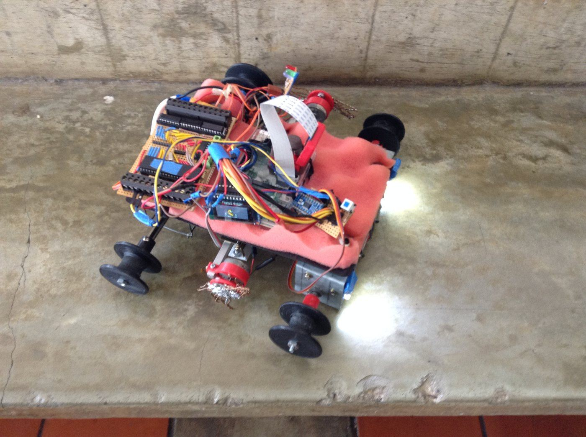
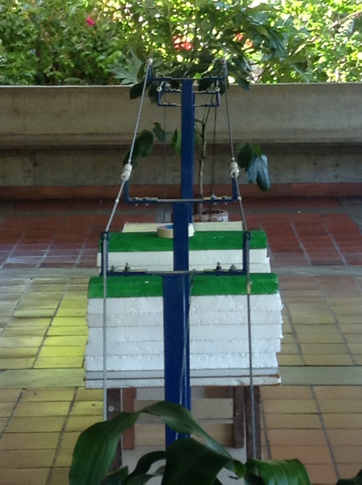
The finished electronics stack (left), and the improvised test rig the team built at home so the vision code had something to practice on before the official one existed (right).
The Challenge
UNETBots is Venezuela's national robotics competition, hosted by Universidad Nacional Experimental del Táchira (UNET) together with AVERD (Asociación Venezolana de Robótica y Domótica) and FUNDELEC, the government's electrical-service development foundation. The 2015 edition's DESAFÍO category asked teams to automate exactly the kind of inspection real utility linemen do by hand or by helicopter.
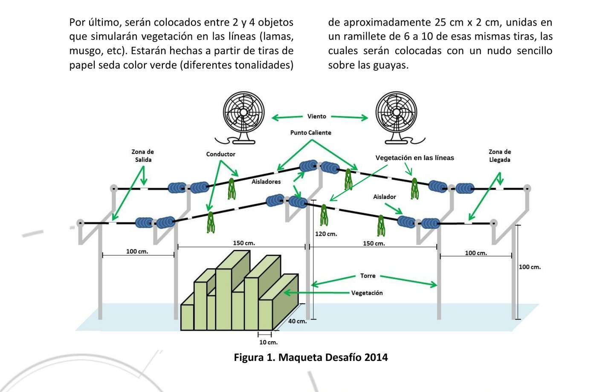
The official course (from the competition rulebook): 5 towers, twin 1/4″ steel cables 25 cm apart, white-tape "hot points," paper-tissue vegetation knots on the wire, foam blocks simulating roadside brush, and two 3-speed fans for wind.
Robots had to weigh 1500 g or less and fit in a 30×30×30 cm cube. Points were awarded per hot point found (more if its distance from the start was also reported correctly), per tower cleared, per dangerous weed detected within 40 cm of a conductor, and per piece of on-wire vegetation actually removed — with a penalty for any left behind. Running with the wind fans on paid a speed bonus. The event ran classification → quarterfinals/semifinal → a single-attempt final over three days (Oct 28–30, 2015) in San Cristóbal.
System Architecture
E-wanna splits the work across three boards, each doing only what it's best suited for:
| Board | Role | Why |
|---|---|---|
| Raspberry Pi | Main controller — runs the state machine and the computer-vision pipeline, makes all high-level decisions | Only board in the stack with enough headroom to run OpenCV on camera frames in real time |
| Arduino Mega 2560 | Sensor controller — reads the IR/line sensors, talks to the motor board, validates sensor data before passing it up | Huge pin count for the sensor fan-out, plus a custom shield soldered directly to it |
| PIC16F877A | Motor controller — generates the step/direction signals and drives the ULN2003 power stage for all four motors | A dedicated, interrupt-driven board keeps motor timing precise regardless of what the Pi/Arduino are doing |
The Pi talks to the Arduino over a plain serial link; the Arduino talks to the PIC over I²C. Both hops use small, fixed-format text/byte commands rather than anything heavier — see Communication below.
Mechanical Design
The chassis is welded from thick steel wire rather than sheet metal or 3D-printed plastic — lighter, and its open lattice doesn't catch much wind. Getting a clean weld on wire that thick took a few failed attempts; the fix that worked was wrapping each joint with a thin wound wire before soldering, so the joint closed around something instead of trying to bridge bare wire to wire.
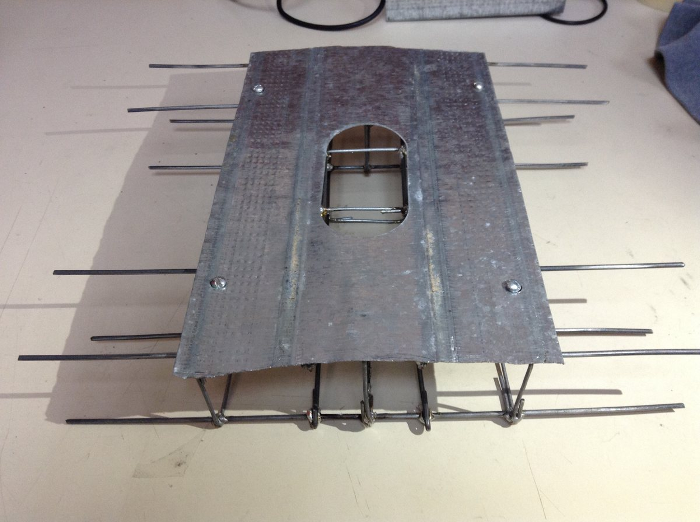
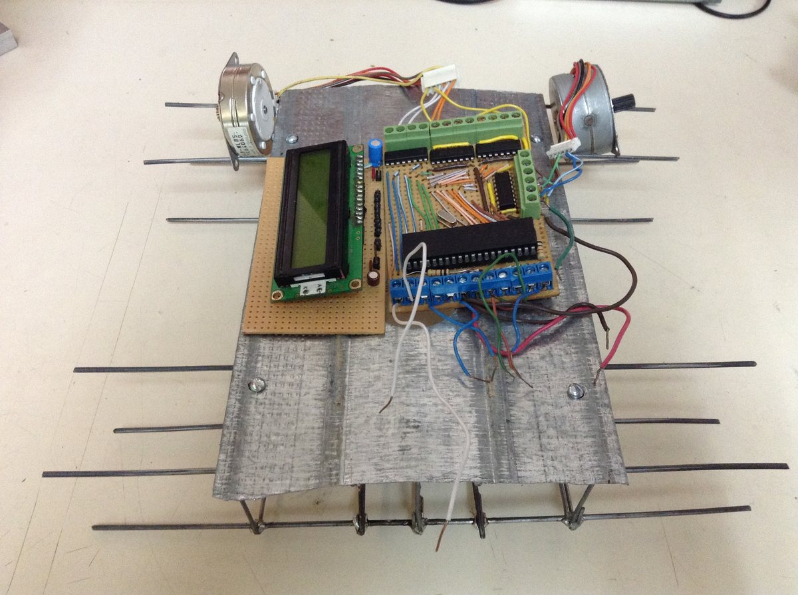
The welded frame under construction, and the finished chassis with motors mounted.
Four 3D-printed wheels carry the robot: the rear two are keyed directly to the stepper motor shafts (a friction-fit adapter clamps each wheel on with a single screw) and provide all the driving force; the front two spin freely on a bearing axle and are only along for balance. Every wheel has a machined groove sized to ride the 1/4″ cable while still clearing the ceramic insulators bolted to each tower ring — a couple of millimeters of tolerance is the difference between rolling through cleanly and getting stuck on every single insulator.
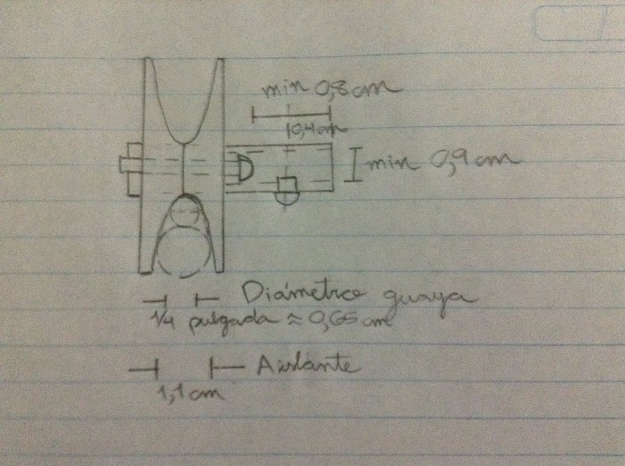
Working out the wheel-groove clearance by hand: the groove has to pass a 0.65 cm cable and the 1.1 cm insulators bolted along it.
Vegetation removal borrows straight from a string-trimmer: a small DC motor spins two twisted lengths of thin copper wire fast enough to shred the paper-tissue "weed" bundles clipped to the line, and switches on only when the vision system has actually flagged vegetation ahead — it doesn't run continuously.
Electronics
| Sensor | Purpose |
|---|---|
| Camera (Pi Camera) | Finds the wire and towers ahead, and is the primary way the robot measures how far it's traveled from the start |
| IMU | Tracks the robot's tilt relative to the cable, to correct the camera-based distance estimate on sloped sections (the center tower sits higher than the rest, so the line isn't flat) |
| 2× line sensors | Tell the robot which side is riding correctly on a conductor |
| Sharp analog IR | Ranges the corridor below the line for waist-height vegetation encroaching on the right-of-way |
Everything runs on +12 V and +5 V from a single 12 V/4.8 Ah battery, stepped down to 5 V with a switching regulator. An LCD on the chassis shows the live distance reading, three status LEDs (green/red/blue) report what the robot last found, and a physical switch is the only way to power it on.
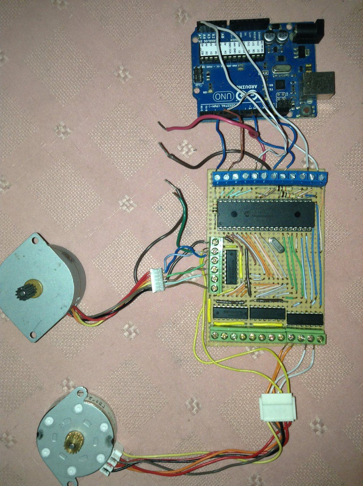
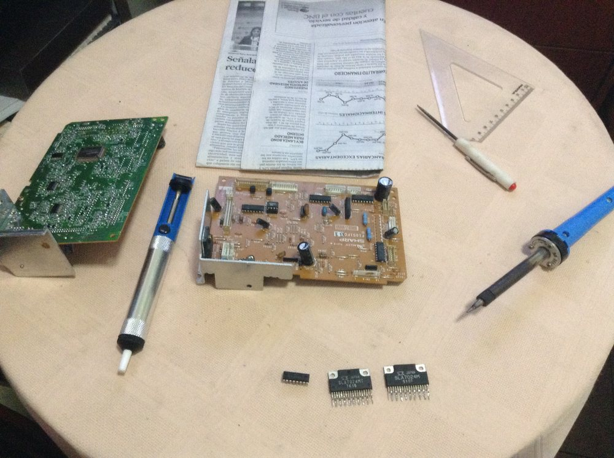
Bench-testing the motor driver with an Arduino stand-in before the real Mega 2560 shield was ready, and hand-soldering the board itself.
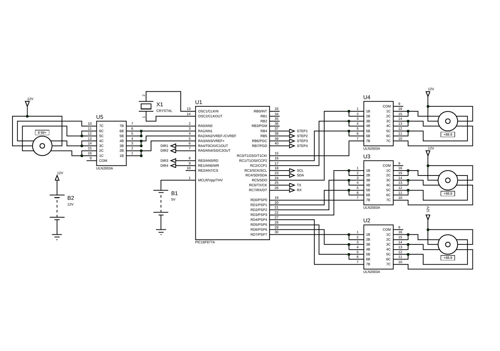
The motor driver board: a PIC16F877A plus four ULN2003A Darlington arrays — one per motor — for the two drive steppers and the two cutter motors.
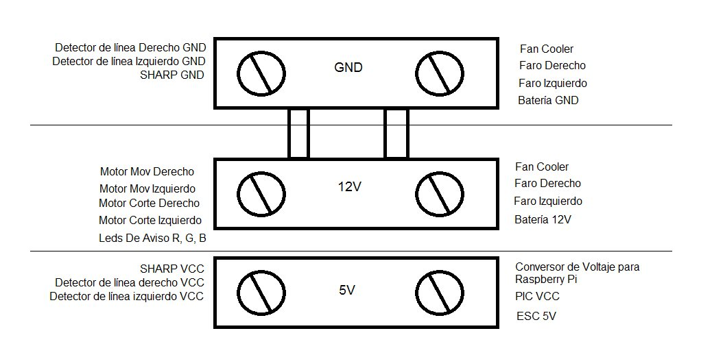
Power distribution across the three rails — motors and headlights on 12 V, logic and sensors on 5 V.
The Sharp IR sensor needed its own calibration curve, since the raw ADC reading isn't linear with distance. A quick bench measurement and curve fit gave a clean exponential relationship that the firmware could invert cheaply:
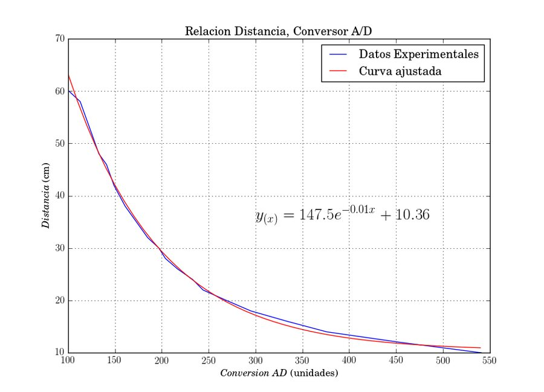
Distance vs. ADC-conversion curve for the Sharp sensor, fitted to y = 147.5·e−0.01x + 10.36. The PIC firmware carries the same relationship baked into a lookup table.
Computer Vision
Rather than anything ML-based, the vision pipeline is a deliberately simple, deliberately robust color-blob detector — the team's own postmortem specifically flags lighting sensitivity as the main risk with camera-based approaches at a competition where you don't control the room. The Pi Camera runs with auto white balance locked off and a fixed "sports" (fast-shutter) exposure mode, so frame-to-frame color doesn't drift while the robot is moving:
- Crop a window around the expected tower location in the frame.
- Convert to HSV and threshold for the tower's known color range.
- Clean up the mask with a morphological opening and take the largest contour.
- Estimate distance to the tower from the contour's bounding-box width, using the classic similar-triangles relationship:
distance = (real_width × focal_length) / pixel_width. - A sudden jump in that distance means the robot just passed under a tower — increment the tower counter.
A debug recording from development: raw camera feed (left) next to the detected-contour overlay (right) used to tune the color thresholds on the bench before the real rig existed.
On the Raspberry Pi, vision runs in its own OS process (Python's multiprocessing), separate from the process driving the OLED status display and the one handling serial I/O to the Arduino, connected by pipes. That way a slow camera frame never stalls the serial link or freezes the display.
Communication Protocol
Both hops in the control chain use small, fixed-format messages instead of anything heavier:
Arduino → PIC (I²C, address 0x61) — a 6-byte frame per command:
| Byte | Meaning |
|---|---|
| 1 | Mode: 0 move N steps, 1 set each coil pin directly, 2 move continuously |
| 2 | Which motor (0–3) |
| 3 | Step type: single / double / half |
| 4 | Direction: derecha / izquierda |
| 5 | Number of steps |
| 6 | Delay between steps, in ms |
On the PIC, all of this runs entirely from interrupts (Timer0 steps the motors, SSP handles I²C, RB-change reads the line sensors, RDA reads serial) — main() itself is just an empty while(true) loop. The step sequencing itself is a straightforward set of lookup tables for single/double/half-step unipolar drive, one table per direction.
Raspberry Pi → Arduino (serial) — short, human-readable ASCII commands, each character sent 5× in a row for reliability, e.g. MON/MOFF (drive motors on/off), CON/COFF (cutter on/off), RON/ROFF, VON/VOFF, ZON/ZOFF (red/green/blue status LEDs), and MFREC30–MFREC90 for seven preset drive speeds.
Problems Along the Way
- Welding the chassis — thick wire wouldn't take a clean joint until they started wrapping each junction with a thin coiled wire first, giving the solder something to close around.
- Motor selection — DC motors were prototyped first, but steppers won out because step count gives distance-traveled for free. Getting enough torque to carry the robot's weight over the whole course took more than one redesign of the driver circuit for higher current.
- Vision under real lighting — development started before the real test rig existed, using an improvised home-built stand-in, so the color thresholds were tuned somewhat blind to the actual competition lighting. Locking the camera's white balance and exposure was the main mitigation.
What They'd Do Differently
- Build (or borrow) a course rig at the very start of the project, not near the end — it's the only way to test vision honestly.
- Consider dedicated color sensors instead of a camera, if the mission allows it — a lot of complexity in this build exists purely to compensate for camera/lighting variability.
- Size motor torque for the fully-loaded robot from day one; guessing low cost them multiple motor swaps.
- Budget at least three months full-time for a project with this many interacting sensors and subsystems.
Team
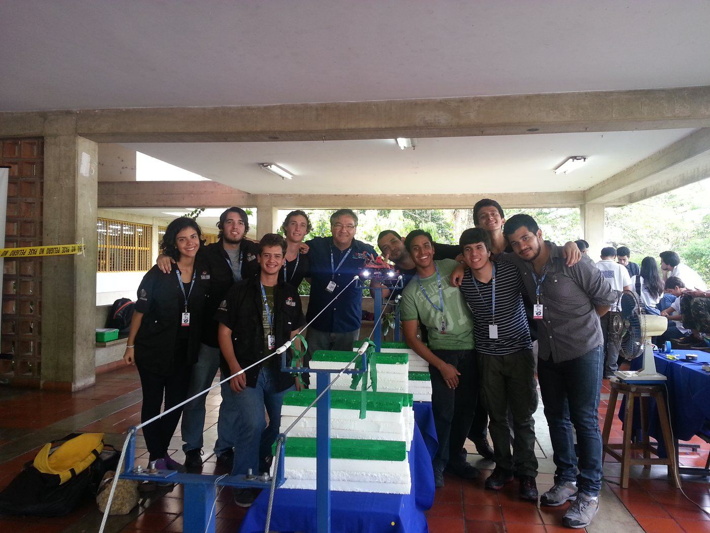
Team ZERO at UNETBots 2015, San Cristóbal.
E-wanna was designed and built by Jorge Pérez, Said Alvarado, Néstor Sánchez and Leonardo Ward — team ZERO, Universidad Simón Bolívar — for the DESAFÍO category of UNETBots 2015.
Posted In:
Robotics